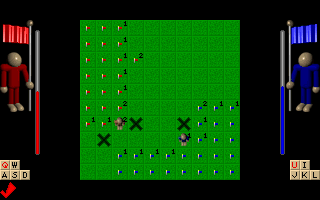

Xarman is an addictive micro-game, a two player cross between Minesweeper and Dyna Blaster.

Xarman was made by the members of ECC, with Xar as the coder, and Firimar as the artist.
It was ported to Linux (svgalib) in June 1999, by Mads Bondo Dydensborg mads@dydensborg.dk. Sound module under Linux by Mads Bondo Dydensborg.
It was ported to SDL in February 2002, by Mads Bondo Dydensborg.
The Great War (World War IV) destroyed all life on planet Earth. Two revival clans got away in large space stations. Now 50 years after, both clans want to reconquer the Earth. But the ground is covered with mines. The clans send specially designed cyborgs to conquer terrain. These cyborgs are equipped with a mine scanner. They always know how many mines there are in a short radius. And they can find the mines, but that takes time. The red and the blue team fights to get the land first. Only one clan can move back to Earth.
The game is a 2 player cross between Minesweeper and Dyna Blaster. Red player is controlled by ASDW and Q, and blue player is controlled by JKLI and U. You are placed in one corner of the screen, and you have to walk around conquering land. The numbers are the amount of mines in a radius of 1 square from the point. You can use Q or U to scan for where the mines are, but this takes time. You win by marking half the squares with your flag, you can not take the other players squares. You die if you step on a mine. Race against a friend.
During play, you can press F11 to toggle fullscreen mode.
Xarman is released under the GPL.
Copyright (C) 1999-2002 Mads Bondo Dydensborg mads@dydensborg.dk (Parts may be (C) ECC)
Please see the file "AUTHORS" for a list of contributers
This program is free software; you can redistribute it and/or modify it under the terms of the GNU General Public License as published by the Free Software Foundation; either version 2 of the License, or (at your option) any later version.
This program is distributed in the hope that it will be useful, but WITHOUT ANY WARRANTY; without even the implied warranty of MERCHANTABILITY or FITNESS FOR A PARTICULAR PURPOSE. See the GNU General Public License for more details.
You should have received a copy of the GNU General Public License along with this program; if not, write to the Free Software Foundation, Inc., 59 Temple Place, Suite 330, Boston, MA 02111-1307 USA
SDL, SDLmixer, SDLimage
Xarman have only been tested on Linux, using version 1.2.2 of SDL and 1.2.0 of SDLmixer and SDLimage with X as the target.
Xarman uses the GNU autotools, and configuration and installation should be quite straightforward.
If you have checked out the sources from github, you should run the shell
script bootstrap, which will create the script configure for you.
If you have downloaded a tar ball, the configure script should already
be in place. Run ./configure --help to get an overview of the options.
The file INSTALL provides generic installation instructions for the
configure script.
If configure fails, it is most likely because you are missing needed libraries. The configure script will try to identify all missing libraries when run, and will let you know what is missing.
After a successful configuration step, you can compile xarman like this:
$ make
If the installation fails and it is during the linking stage, it is
most likely because you have discovered a dependency on a library,
that the configure script does not take into account. A likely cause
is that you need a devel package for some library on your Linux
system. Please install the necessary package and make again.
You do not need to install xarman to test it out. But if you wish, you can issue the command
$ make install
to install xarman to the location you configured for (default
/usr/local/). Xarman does not follow the LSB directions of installing
games to /usr/local/games/bin/xarman, but instead installs to
/usr/local/bin/xarman. Shared files are installed into
/usr/local/share/games/xarman however.
After building xarman, you can either issue the command
$ src/xarman
or, if you have installed xarman
$/path/to/xarman
to run xarman.
For mostly selfexplaining options run xarman with the --help option.
No know bugs.